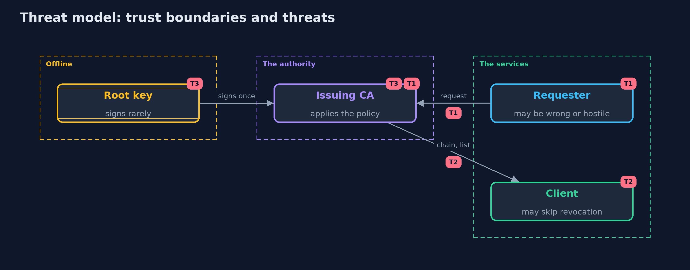

Threat Model — A Local Certificate Authority
A threat model answers four questions: what are we protecting, who or what could harm it, how, and what do we do about it. This one covers this project's own demo system, not a production deployment. Domain: an online store's internal services.
Scope
The store's internal certificate authority: its keys, the requests it accepts, the certificates and lists it publishes and the clients that rely on them. It does not cover the machines that hold service keys, or the public web PKI.
What we protect (assets)
- The issuing authority's private key.
- The root's private key.
- The trust of every internal client in what the authority signs.
Who and what acts on the system
- A team that requests certificates.
- An attacker who steals a service key.
- An attacker who steals or abuses the issuing key.
Trust boundaries
A trust boundary is a line that data or a request crosses between parts that trust each other differently. Threats cluster where those lines are.
- A signing request to the issuer: untrusted until proof of possession, names and lifetime are checked.
- The issuing authority to the clients: they trust only the root and what it constrains.

Each dashed box is a trust boundary. A rose tag such as T1 shows where the threat of that number, in the table below, applies.
Threats, using STRIDE
STRIDE is a checklist of six kinds of threat: Spoofing (S), Tampering (T), Repudiation (R), Information disclosure (I), Denial of service (D), Elevation of privilege (E).
| Id | Kind | Threat | Where it shows up | Control in this project | What is left |
|---|---|---|---|---|---|
| T1 | Spoofing | A requester obtains a certificate for a name it does not own, or without holding the key | CertificateAuthority.issue, Csr |
Proof of possession, a per-team allow-list, domain and lifetime checks, and a name constraint in the issuing certificate | A compromised issuer that is also trusted for the whole domain |
| T2 | Elevation of privilege | A revoked or stolen certificate keeps working | Validator |
Current revocation lists that fail closed, and short-lived certificates that expire by themselves | Clients that never check, until the certificate expires |
| T3 | Elevation of privilege | A stolen issuing or root key lets an attacker sign anything it is trusted for | CertificateAuthority |
An offline root with a few signatures, a revoked-issuer list, path length zero and an audit log | Replacing the root in every client after a root compromise |
Assumptions
- The root key is offline and its few signatures are controlled.
- Clients use a standard validator that enforces name constraints.
Out of scope
- Hardware security modules.
- OCSP, certificate transparency and the public web PKI.
How the tests check this
LocalCaTestchecks validation, the policy refusals, proof of possession, the name constraint, the client profile, revocation with and without checking, the stale list, root revocation, short-lived renewal and expiry, the inventory and the audit log.DemoRunsTestcompares the whole demo with the golden output.
Where this model goes next
The next project, tls-misconfigurations, checks the servers that present these certificates, for weak protocols, weak ciphers and broken chains.